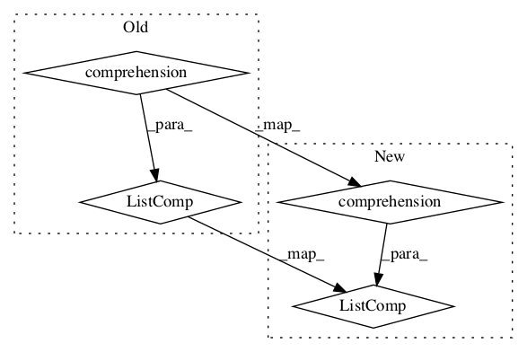

Pattern ID :338

Before Change
def _pretty(self):
refs_line = " ".join(self._order_ref_strings(self.refs))
cond_lines = sum([filter(str.strip, cond._pretty()) for cond in self.conds], [])
length = max([len(refs_line)] + list(map(len, cond_lines)))
drs = [" _" + "_"*length + "_ ",
"| " + refs_line + " "*(length-len(refs_line)) + " |",
After Change
def _pretty(self):
refs_line = " ".join(self._order_ref_strings(self.refs))
cond_lines = [cond for cond_line in [filter(str.strip, cond._pretty())
for cond in self.conds]
for cond in cond_line]
length = max([len(refs_line)] + list(map(len, cond_lines)))
drs = ([" _" + "_" * length + "_ ",
In pattern: SUPERPATTERN
Frequency: 7
Non-data size: 4
Instances
Fragment ID: 1077907
Project Name: nltk/nltk
Commit Name: 8f89d8bbda54a0022ce7eb1a1bf35139c0a3167e
Time: 2012-12-21
Author: peter.ljunglof@heatherleaf.se
File Name: nltk/sem/drt.py
Class Name: DRS
Method Name: _pretty
Fragment ID: 1077909
Project Name: nltk/nltk
Commit Name: 30c67c8e0e5fbfff8c0c973cee2da5fcd464cf9c
Time: 2012-05-29
Author: kmike84@gmail.com
File Name: nltk/inference/nonmonotonic.py
Class Name: ClosedDomainProver
Method Name: assumptions
Fragment ID: 1077911
Project Name: nltk/nltk
Commit Name: 314a3244528155320f41534c9d88c4d7aa7ad12e
Time: 2013-08-26
Author: wooters@icsi.berkeley.edu
File Name: nltk/corpus/reader/framenet.py
Class Name: FramenetCorpusReader
Method Name: frame_relation_types
Fragment ID: 1077913
Project Name: nltk/nltk
Commit Name: 573f31789d4f34e3af5b06f1b248f069ed6bae07
Time: 2017-03-18
Author: jaehoon217@gmail.com
File Name: nltk/stem/paicehusk.py
Class Name: PaiceHuskStemmer
Method Name: first_vowel
Fragment ID: 1077916
Project Name: nltk/nltk
Commit Name: dbc1029b016a8763ae3b48b820dd502bd01af60a
Time: 2004-06-30
Author: edloper@ldc.upenn.edu
File Name: src/nltk/feature/word.py
Class Name: SetOfWordsFeatureDetector
Method Name: raw_detect_features
Fragment ID: 1077918
Project Name: nltk/nltk
Commit Name: e841d322baa86f0e73eb5bf01db64f4505a70bb1
Time: 2018-08-16
Author: ilia.kurenkov@gmail.com
File Name: nltk/test/unit/model/test_counter.py
Class Name: TrigramCounterDifferentInputs
Method Name: test_train_on_unigrams
Fragment ID: 1077919
Project Name: nltk/nltk
Commit Name: 7c419bfe10e3ceebbd4ae4c6ce826acb0cd02cdf
Time: 2017-06-16
Author: chintan.sh@media.net
File Name: nltk/corpus/reader/verbnet.py
Class Name: VerbnetCorpusReader
Method Name: themroles